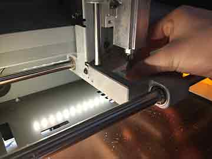

4. Electronics production
Mill the board, stuff the board and programme it
Preparing the device
Learning how the CNC machine works and understanding why sacrificial layer is needed was interesting. I had a closer look at the collet, clean with air-brusher then put it back on.
Using double-sided tape |
Check the residue on FR1 board |
Fixing it on sacrificial layer on SRM-20 |
Using the doubled-sided tape fixed the board tightly to the sacrifical layer and with pressure using my hand made sure it’s stable and doesn’t move at all. Before milling the board It’s recommended to wipe with cleansing material.
I’ve broken many end-mills including keeping z-axis fixed and moving with VPanel and dropping on the machine for carelessness. I’ve learned the great lesson that it’s wiser to look over steps(the manual or steps) and always do the pre-test before cutting and last of all be in mind that this kind of part is money and must be used for the next user. Think about the next user who is waiting for the mill :=)
The new copper board should be looking live picture above, In fact the real story behind this copper board is that we ordered the FR4 board and it surely doesn’t look like FR4 board that my instructor expected. Therefore when altering the speed of an end-mill it had to be very cautious and on fab modules it’s recommended to use 3 mm/s for the ‘new’ end-mill and 4 mm/s for many used ‘old’ end-mill.
Keep in mind to check if the end-mill is clean always and be sure there aren’t any sticky stuff or copper powders left when keeping in inventory.
 |
 |
Changing the collet |
Closer view of changing collet |
Locking the end-mill |
Locking the collet with wrench |
From removing the end-mill to changing the collet. It was a good experience for me since this is my first time dealing with CNC parts. It would be much nice for me to learn more about different kinds of end-mills for the future
Things to remember on ‘Fab modules’
-
Always check the resolution and print size. (trace = outline)
-
Watch on VPanel (CNC software program) that rpm rate is more or less around 8000 rpm
-
End-mill breaks, even with less care it can break easily therefore be more cautious.
-
During cutting check for once it’s cutting nicely.
-
When doing Z-axis you put little pressure on board so the end-mill stay close.
-
Prepare 3 files at the same time : traces, outlines and overview of final components.
End-mill setting
‘New’ end-mill : cut 30 mm/min, traces 180 mm/min
‘Old’ end-mill : cut 30 mm/min, traces 240 mm/min
Cut depth : Slightly over the diameter of a mill ex) if mill is 0.8, cut depth is <0.5
Stepover : half the diameter of an end-mill.
My first board
There was a little accident, not dangerous but something bizarre happened with the setting so CNC destroyed some of my board but fortunately my traces was not cut so it was okay to do the soldering.
Soldering preparation
 |
|
My first board (with accident) , traces are alive |
Listing the components to check |
My first board (with accident) , traces are alive |
FabLab Seoul Inventory (SMD components) |
Flux(magic liquid), solder |
Putting on SMD component |
Looking at the Hello.ISP.44 files on blank piece of paper I’ve taped down the components I need for making the board. This way I can save parts from losing and helps identifying the same-looking like components especially resistors.
Soldering tips
-
Do the most difficult component first ( Attiny , mosfet, Micro-USB .. etc. )
-
Put components from centre to outside.
-
Use ‘Flux’ enough to easily solder.
I’ve done soldering with help from my instructor giving me a lot of help with the checking. It was easy to find components that are first to be soldered which is ‘Micro-USB’ and ‘Attiny 44’ components. I’ve burnt some traces and copper came off from the board. However, it was good enough for me to overcome obstacles. To be honest, I didn’t expect to finish the board in just first trial.
Doing the soldering with taped down to MDF |
Checking polarity |
Finally done with soldering |
Reason why I’m keeping the record of old FabISP is because to show that I had joined traces with solder-wire to fix the board. There could be other ways to fix the board and the easy way is to make jumper wire.
After solder(Start programming)
Connected to the computer my board wasn’t making any problem as i touched micro-processor with my thumb. Smoke test was successful and with multi-meter I tested all traces that could possibly make bridges.
Bridge solder to check shortage |
Checking GND, VCC |
As a final approach i found a way to do it with MAC OS-X looking at the tutorial on the left I’ve downloaded both Xcode and Archive and worked the code on terminal.
After addressing the terminal to the folder that firmware.zip files are downloaded (ex. cd Desktop/FabISP_mac.0.8.2.firmware ) It’s ready to be programmed with sudo command.
-
make clean
-
make hex
-
make fuse
-
make program (when administrator has password : try sudo make program)
There could be possible errors when doing the programming command. It’s normally about connection or bridges problem. However for the first try, check the components with magnifying glass and try to shine solder for better conductivity.
Further steps
On linux (Mac OS X) Terminal |
With etching problem chaning the board |
 |
|
FABISP Identified |
Alcohol cleaning for longer use |
For the first trial board It could not be used as shown above, I’ve done nothing to keep the board clean and I was told later on, use the cotton wipe and alcohol to swip the upper board for long-usability of boards. My FabISP which seems to be my fifth trial success almost made me cry when it was finally programmed correctly. It wasn't my consideration to think over when I first started the assignment. However, as I went on my soldering skill came as well
testing bootloading
FABDUINO a.k.a. FabKit V0.2
Many times I’ve counted lots of programme errors and when this kind of error happens, it’s normally two ways to fix problems. First, restart the machine or programme. Second, check again for ‘setting’. It’s always important to check again on VPanel software to make correct setting otherwise, the end-mill can break with unexpected z-axis setting.
Be in mind that SRM-20 has two settings ‘RML-1’ & ‘NC Code’. When making .rml files on fab modules and RML-1 isn’t compatible with .rml files. 1 out of 10 times when doing jobs with RML-1 setting the CNC machine make strange path above the board. To safely use the machine it’s always safe to make Z-axis setting with NC code.